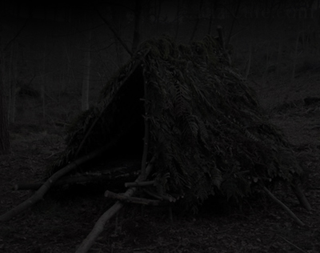

Разведя костёр, ты принялся за освежевание убитой туши ради шкур и мяса.
-Говорят, что некоторые части мяса волков залечивают раны.
Из слюнных желёз волка ты сделал зелье, которое позволит тебе залечивать раны, а шкура, что ты снял прикроет порванные части одежды.
Ну что же, похоже прийдётся переночевать здесь.
*Сооружает Из веток Шалаш, в котором можно укрыться от дождя и ветра и который замаскирует от хищников*

-Так намного лучше, чем спать на голой земле без крыши.
Заснуть